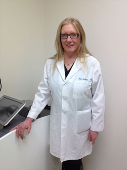
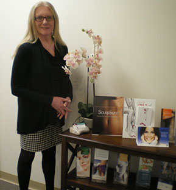

About Dr. Galan
Elizabeth B. Galan, M.D. is Board Certified by the American Board of Family Practice.
 
Dr. Galan graduated from Mount Holyoke College and UMDNJ - New Jersey Medical School. She also holds an MBA from Western New England College and an MS in Polymer Science and Engineering from the University of Massachusetts.
Dr. Galan graduated from Mount Holyoke College and UMDNJ - New Jersey Medical School. She also holds an MBA from Western New England College and an MS in Polymer Science and Engineering from the University of Massachusetts.
She completed her internship in Coral Springs, FL, and her residency at Middlesex Hospital in Middletown, CT. While attending UMDNJ, she completed clerkships in dermatology at the University of Miami and the University of South Florida, as well as New Jersey Medical School.
She is a member of the American Medical Association and the American Society for Laser Medicine and Surgery.